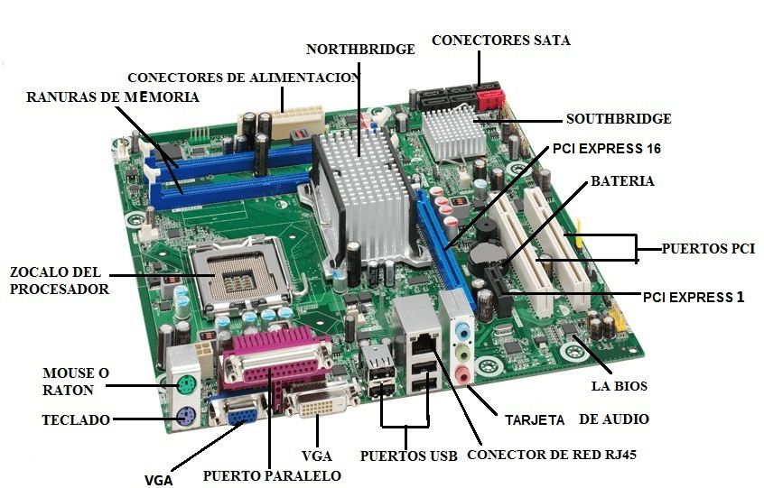
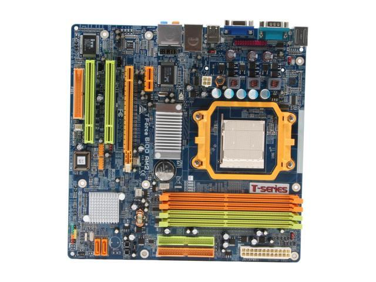

La placa madre, o motherboard, es el componente fundamental de una computadora, actuando como la plataforma principal que conecta todos los demás componentes y permite su comunicación. Es responsable de integrar el procesador, la memoria, las unidades de almacenamiento y otros periféricos, y su diseño determina la funcionalidad y capacidad de expansión del sistema.
También, las placas madre vienen en diferentes tamaños, conocidos como factores de forma, como ATX, microATX y Mini-ITX, que influyen en la compatibilidad con el gabinete de la computadora. Cada placa madre tiene un chipset que gestiona la comunicación entre el procesador y otros componentes, y esta característica es crucial para la compatibilidad y el rendimiento general del sistema. Además, incluyen diversas ranuras de expansión, como PCIe, para agregar tarjetas adicionales, así como conectores para discos duros y unidades de almacenamiento. Los puertos USB, HDMI y de red también son parte de su diseño, permitiendo la conexión de dispositivos externos y la comunicación con internet. También pueden incluir características de refrigeración y gestión de energía, asegurando que los componentes se mantengan dentro de rangos óptimos de temperatura y funcionamiento.
Marcas de placas madre: Las principales marcas incluyen ASUS, conocida por sus series ROG para gamers y TUF para durabilidad; MSI, popular entre entusiastas con sus series Gaming y PRO; Gigabyte, que ofrece opciones variadas, destacando AORUS para gamers y B550/Z490 para usuarios avanzados; ASRock, reconocida por su buena relación calidad-precio; EVGA, valorada por overclockers y gamers en su serie Z; Intel, que fabrica placas madre para sus propios chipsets; y Biostar, que ofrece opciones asequibles para usuarios básicos y medios.
Volver